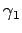
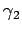
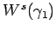
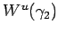
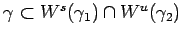
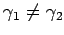
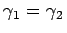
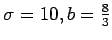
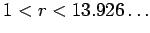
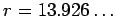

Inhalt Index DeskTop Bronstein

 Dynamische Systeme und Chaos Gewöhnliche Differentialgleichungen und Abbildungen Qualitative Theorie gewöhnlicher Differentialgleichungen Invariante Mannigfaltigkeiten
Dynamische Systeme und Chaos Gewöhnliche Differentialgleichungen und Abbildungen Qualitative Theorie gewöhnlicher Differentialgleichungen Invariante Mannigfaltigkeiten


Es seien  und  zwei hyperbolische Ruhelagen oder periodische Orbits von (17.1). Die Separatrixflächen  und  können sich schneiden. Der Schnitt besteht dann aus ganzen Orbits. Für zwei Ruhelagen oder periodische Orbits heißt jeder Orbit  heteroklin, falls  ist (s. linke Abbildung), und homoklin, falls . Homokline Orbits von Ruhelagen heißen auch Separatrixschleifen (s. rechte Abbildung).
| Beispiel |
|
Das LORENZ-System (17.2) wird bei festen Parametern  und veränderlichem r betrachtet. Die Ruhelage (0,0,0) von (17.2) ist für  ein Sattel, der durch eine zweidimensionale stabile Mannigfaltigkeit Ws und eine eindimensionale instabile Mannigfaltigkeit Wu charakterisiert wird. Bei  bilden sich in (0,0,0) zwei Separatrixschleifen, d.h., die beiden Äste der instabilen Mannigfaltigkeit kehren für |